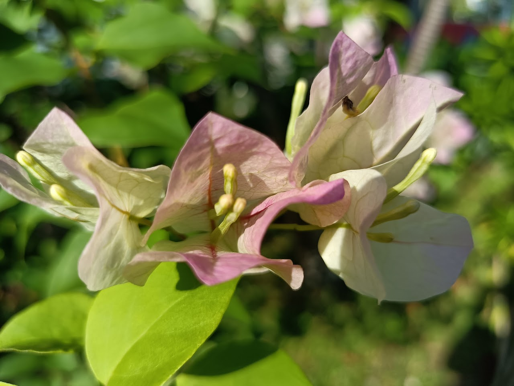

I'm Haziq and I think of myself as understanding, open-minded, easy-going, optimistic and helpful.
My hobbies includes taking photographs, recording and editing videos and indulging in personal projects.
I am very interested in learning new things and finding things that puzzle my brain.
My current work experience include being a part time bellman at Marriott Tang Plaza Hotel from 2022-Present.
My dream is to work with as many people, professionals and experts to be able to learn more from them and expand my knowledge and area of expertise. This includes in photography, cinematography and anything related to IT and the internet of things. In a world where technology and media are influencing the world a lot, it is up to me to keep up.